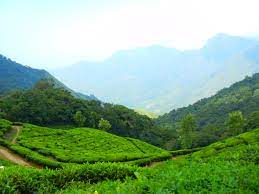
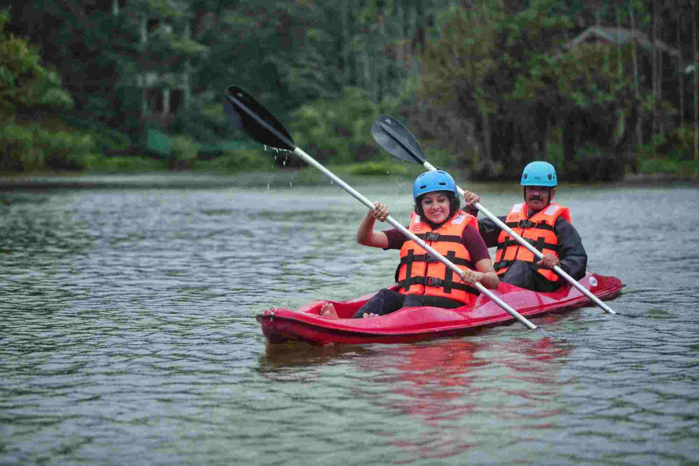
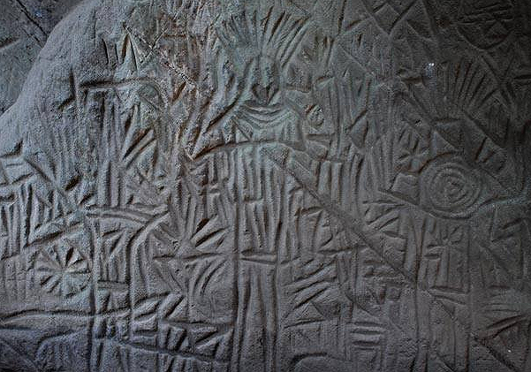
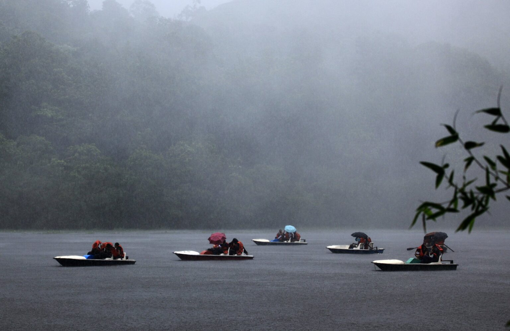
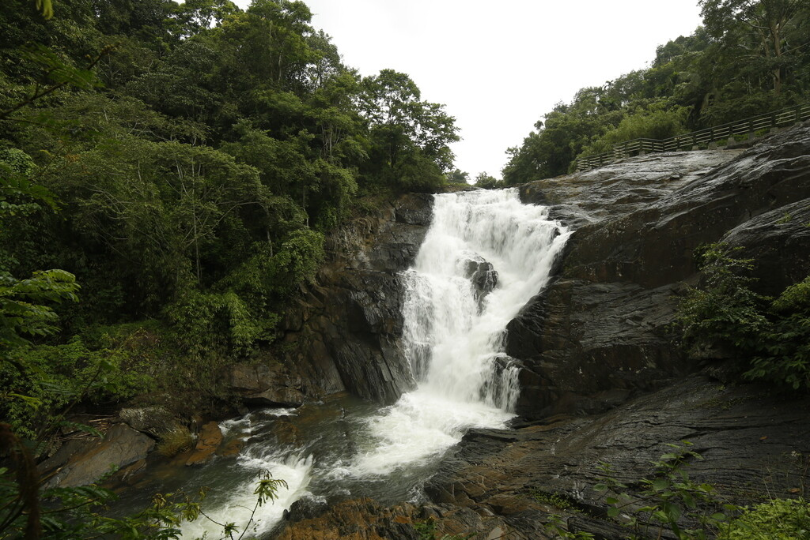

TOP DESTINATIONS
-

Priyadarshini Environs
Priyadarshini Tea Environs is a tea estate, tea factory, tea museum, forest reserve and tourist resort all rolled into one thrilling package. The Vishwas Point Trek, which takes you to the highest point in Priyadarshini, is a popular trekking route. Camping trips can also be arranged here. Priyadarshini also has a natural pond, amphitheater and herb gardens. Organic farm produce is available at Priyadarshini’s poly houses. Tree houses and other accommodation options are also available, along with ethnic delicacies prepared by the friendly natives.
-

Karlad Lake
Karlad Lake is a natural freshwater lake located around 8 KMS from Vythiri and 3 KMS away from Banasura Sagar Dam in Wayanad. The Wayanad Adventure Camp here offers a wide range of activities for the adventure enthusiasts out there. The activities organized involve Kayaking, Zipline, Rock climbing, Boating, Nature walk and Bamboo rafting. An all season Swiss cottage tents here offer best accommodation facility for the travelers.
-

Edakkal Caves
A trip to Edakkal Caves is like a journey into our forgotten past. Located 10 kms from Sulthan Bathery, they have provided historians with great information regarding the lives and habits of our ancestors. The caves are two natural rock formations believed to have been formed by a large split in a huge rock. The carvings inside are extremely beautiful. A trek up the majestic Ambukuthi Hills is required to reach these caves. The aroma of coffee stays with you the entire way. It is truly a surreal experience as we step into the palms of history.
-

Pookode Lake
A natural fresh water lake surrounded by evergreen forest and rolling hills. A fresh water aquarium with large variety of fish is an added attraction. Tourists can also avail of boating facilities,cycling, children’s park, and a shopping centre for handicrafts and spices
-

Kanthanpara Waterfalls
Kanthanpara is a quaint little waterfall in Wayanad, famous for its secluded and serene vibe. The cool, sparking waters at this lesser known destination is sure to soothe all who wish to rejuvenate in a silent environment. Surrounded by beautiful greenery on all sides, it is worth spending a day a picnicking in the calming embrace of nature. One can go for river hiking, bathing and bird-watching here. NAVIGATE